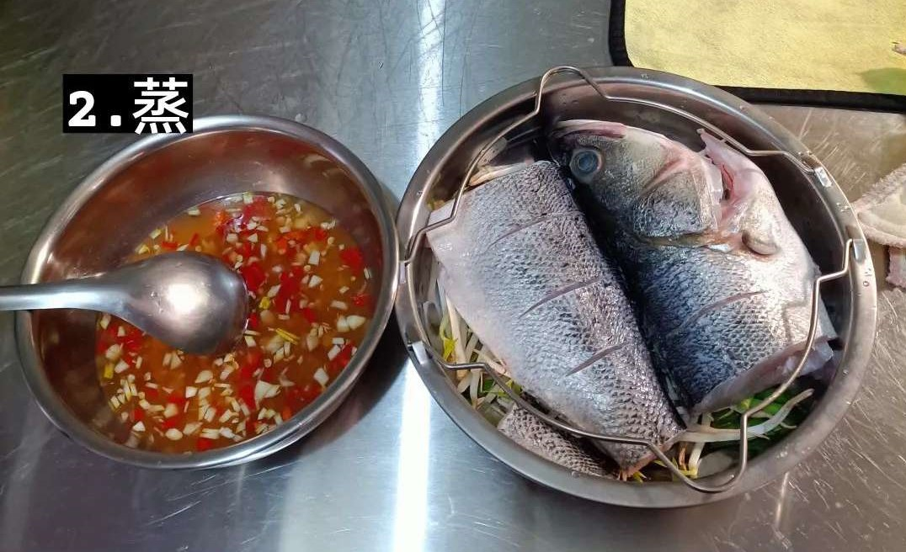

所需材料：
- 鱸魚一尾
- 檸檬一顆
- 辣椒兩根
- 蒜頭三到五瓣
- 蔥一枝
- 洋蔥一顆
- 豆芽菜一包
- 糖
- 白胡椒粉
- 米酒
- 水
- 魚露
魚的處理：
1.刮除鱗片、修魚鰭
2.剪開魚腹、刮除內臟並清洗乾淨
3.確認魚的乾淨並在表面劃刀痕
4.將洋蔥及豆芽菜洗淨
5.洋蔥切條與豆芽並行鋪於盤底

調料的處理：
6.蒜頭、辣椒切碎
7.加入糖一匙
8.加入米酒兩匙
9.魚露兩匙
10.檸檬汁一顆的量
11.白胡椒粉一小匙
12.加入兩匙水、拌勻
13.將魚放入盤內、平均淋上調料
14.放入電鍋蒸
15.蔥切細絲放上出鍋後的料理
16.熱少許油至些許冒煙、淋上蔥絲即可出菜
好吃到Xin chào™
筆者：蔡銘揚